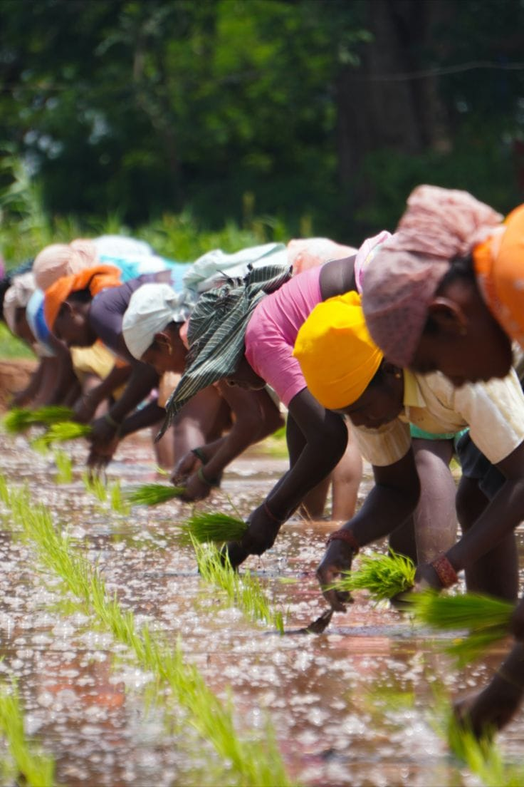
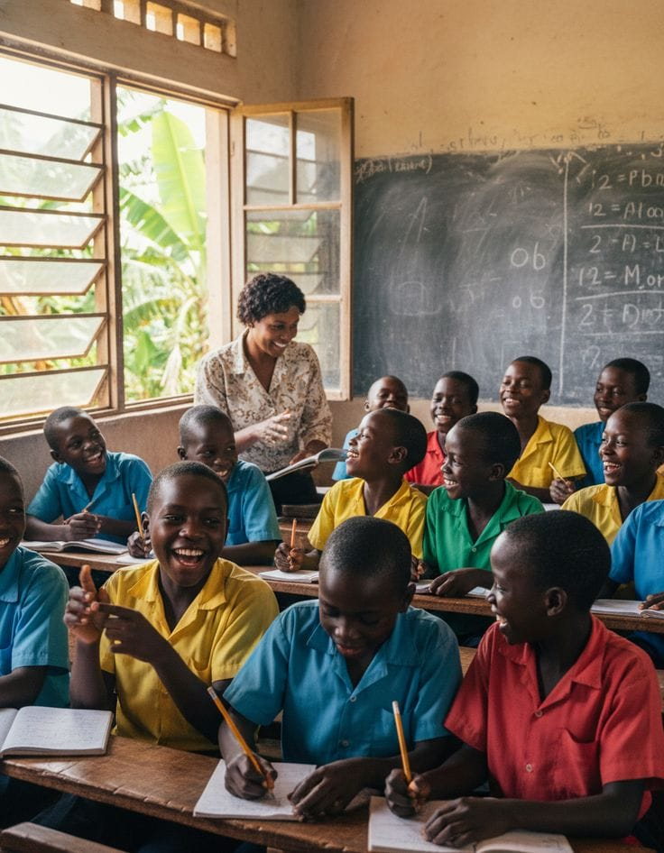

Agriculture and Food Security
We aim to support smallholder farmers and livestock keepers with practical approaches to stronger, more reliable livelihoods. This programme area includes climate-smart farming, value addition and market linkages.
Ask about taking part

Youth Empowerment and Entrepreneurship
We want young people to build confidence and create options for their future. The programme area focuses on practical skills, financial literacy, mentorship, enterprise development and livelihood opportunities.
Ask about taking part

Education and Human Development
We support learning and personal development through learning support, school attendance awareness, vocational skills, mentorship, leadership and community capacity development.
Ask about taking part

Environment and Community Resilience
We encourage conservation, tree planting and sustainable management of natural resources, while helping communities adapt to climate risks and protect the foundations of local livelihoods.
Discuss working together